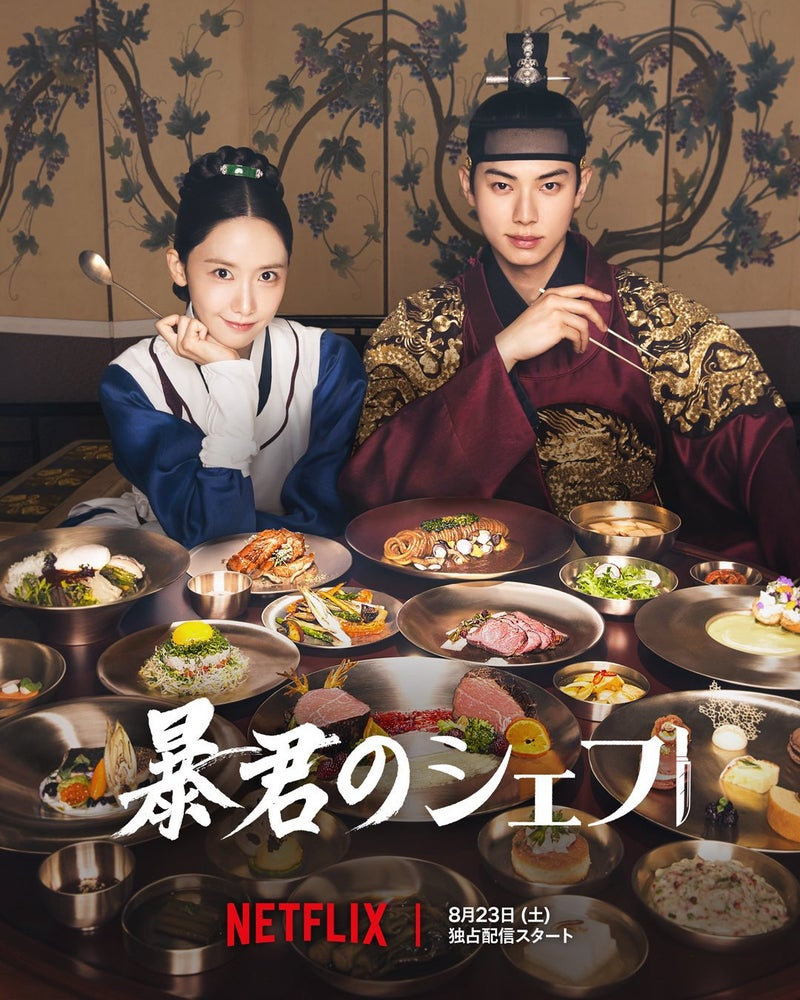

ジャンル別おすすめ
🎭 ヒューマンドラマ
『サイコだけど大丈夫』
愛を知らない人気童話作家と、愛を拒む精神病棟の保護士。傷を抱えた二人が、お互いの”心のフタ”を開けて、壊れながらも再生していく、最高にスタイリッシュなヒーリングラブロマンス
主人公のムン・ガンテは、心を閉ざした精神病棟の保護士。自閉スペクトラム症の兄と二人で暮らし、自分の感情を押し殺して生きていた。そんな彼の前に現れたのは、感情のブレーキが壊れたような人気童話作家コ・ムニョン。彼女は美しいけれど、「サイコ」と呼ばれるほど感情に欠けていて……。
🚀 SFコメディ

『暴君のシェフ』
時間を遡る "タイムリープ" と、絶品 "グルメ" が融合した、斬新でスピーディーな新感覚ファンタジードラマ
主人公ヨン・ジヨンは、世界が認める三ツ星フランス料理レストランのヘッドシェフ。完璧主義者で、その腕と美しさから注目を集める彼女は、ある日突然、500年前の朝鮮王朝にタイムスリップ! 彼女は現代のフレンチ技術と食材の知識を駆使して、次々と常識破りの絶品料理を生み出すのだった。そんな彼女の料理で絶対味覚を持つ冷酷で気難しい「暴君」と呼ばれる王の凍った心と宮廷の歴史を少しずつ変えてゆく！？
💖 SFロマンス
『ソンジェ背負って走れ』
「過去に戻れたら、推しを救いたい…」 この世を去った推しをタイムスリップで救え‼
主人公のイム・ソルの人生は、トップアイドルであるリュ・ソンジェの存在によって救われた。彼女はソンジェの大ファン。しかし、ある日突然、ソンジェがこの世を去ったという悲しいニュースが届く…。絶望したソルは、ひょんなことから過去へタイムスリップして戻ったのは、ソンジェがまだ高校生だった時代。ソルは「未来」を知っている唯一の人間として、彼の悲しい運命を変えれるのか?
💘 ロマンスミステリー
『涙の女王』
財閥のお金持ち夫婦が、離婚を決意した矢先に襲いかかる【命の危機と秘密】 コミカルな財閥家のドタバタ、そして主人公たちに襲いかかる陰謀と秘密が笑いあり、涙あり、ハラハラありの究極のロマンスミステリー！
ペク・ヒョヌは、財閥クイーンズグループの令嬢ホン・ヘインと結婚し、「世紀の婿」と呼ばれていた。しかし、結婚3年目。冷え切った夫婦生活と、冷酷な財閥家でのプレッシャーに疲れ果てたヒョヌは、ついに離婚届を突きつけることを決意…。 妻ヘインは、一見完璧で冷たい「女王」そのもの。しかし、そんな彼女が余命宣告を受け、状況は急展開へ……。
※画像出典：Netflix JP 公式X U-NEXT 公式サイト